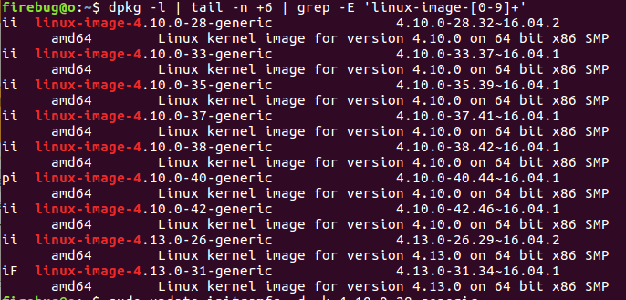

相关术语
Device-mapper：linux内核组件，用来支持逻辑卷管理的通用设备映射机制，它为实现用于存储资源管理的块设备驱动提供了一个高度模块化的内核架构。简单地说，就是将更高层的虚拟块设备（virtual block devices）映射到物理块设备（physical block devices）的架构。它是LVM2的重要组成部分。
LVM：是可用在Linux内核的逻辑分卷管理器，用于管理磁盘驱动器或其他类似的大容量存储设备。利用device-mapper来实现存储系统的虚拟化，是的系统分区独立于底层物理。
- initrid(initial RAM disk)：是由boot loader初始化的根文件系统，它在真正的根文件系统可用之前被装载。intrid的目的是将内核的启动分成两个阶段，一个在内核中保留最少最基本的启动代码，然后将不同硬件设备的支持以模块的方式存放在initrd.img文件中，需要启动哪个设备，就装载哪个模块。
Bug 描述
LVM用独立的/boot分区来安装和解码，该分区默认只能有4或5个内核。在安装了新的kernel后，旧的kernel并不会自动删除，它们依然保留在磁盘上（/boot分区），所以会导致磁盘无剩余空间，你啥也安不了。我在安装jekyll的时候就出现了这个问题，因为它要依赖 linux-image-4.13.0-32-generic 这个内核，但是boot里没有空间来安装这个内核，导致无法安装jekyll。
你可以用一下命令来得到所有已经安装的内核：1
dpkg --list | grep linux-image
下图是我当时得到的结果，可以看到我的boot里装了9个内核：

安装软件时，可能会报以下错误：1
E: Sub-process /usr/bin/dpkg returned an error code (1)
运行1
2$ sudo apt-get update
$ sudo apt-get -f install
后，会提醒你 “The following packages were automatically installed and are no longer required:” ，然后会列出旧的不使用的内核。
解决
我尝试了很多种办法，用autoremove、purge都不行，然后在Ubuntu社区找到了如下办法，终于安全的删除了不用的内核，终于可以正常使用包管理器了:
主要思想就是手动删除旧kernel的initrd.img文件。为什么呢？因为系统在删除内核package的时候，要执行1
update-initramfs -c
这一操作，而这一操作需要boot分区的磁盘空间。就是因为没有磁盘空间了我才要删除kernels，所以这种情况下就不能用automove/purge命令。当然，在boot分区没有满的时候，执行这条命令就足够了：1
$ sudo apt-get autoremove --purge